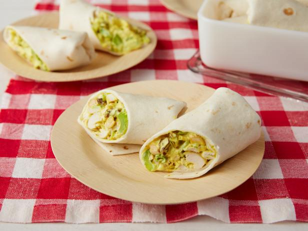

Chicken Curry Wraps

These simple and unique chicken curry wraps are perfect for an easy lunch while hiking and backpacking. I was introduced to this recipe by my friend Jack Vorster while we were working as backpacking guides for UCLA Outdoor Adventures.
Ingredients
- 1 Foil Packet of Chicken
- 1 2.5 oz Ranch Dressing Packet
- 1/8 cup Raisins
- 1/8 cup cashews
- 1/2 tablespoon Curry Powder
- 1/2 teaspoon Cumin
- 1/4 teaspoon Cayenne
- 1/8 teaspoon Salt
- 1/8 teaspoon Pepper
- 2 Tortillas or Pitas
Steps
- Before leaving for your trip add the spices, cashews, and raisins to a gallon ziploc bag.
- When you are ready to eat add the chicken and ranch and mix everything together by massaging the bag.
- Scoop the result on to a tortilla or pita.
- Enjoy!